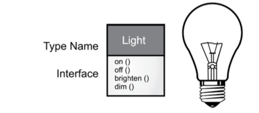

On JAVA
Table of Contents
1 What is an object?
1.1 Early languages
Think of PLs as mediums to express the thoughts to solve a problem. There are different mediums to solve different types of problems. OO is one of the mediums to express the thought of creating an application.
1.2 Abstractions
All PLs are abstractions. It can be argued that the complexity of the problems you’re able to solve is directly related to the kind and quality of abstraction. By “kind” I mean, “What is it you are abstracting? First languages like assembaly were abstraction of the machine. Next generation of PLs were abstractions of the Assembaly language. The programmer must establish the association between the machine model (the “solution space,” the place where you’re implementing that solution, such as a computer) and the model of the problem that is actually solved (the “problem space,” the place where the problem exists, such as a business). The effort required to perform this mapping, and the fact it is extrinsic to the programming language, produces programs that are difficult to write and expensive to maintain. The alternative to modeling the machine is to model the problem you’re trying to solve. Early languages such as LISP and APL chose particular views of the world (“All problems are ultimately lists” or “All problems are algorithmic,” respectively). Prolog casts all problems into chains of decisions. Each of these approaches can be a good solution to the particular class of problem they’re designed to solve, but when you step outside of that domain they become awkward.
OO approach tries to represtend elements of the problem space. The represtations if the elements of the problem space are called Objects.
This approach allows for using the vocabluary of the problem space in the program. Therefore the in OOP the problem is described in terms of the problem itself.
The objects in the program are similar to objects in real world, they have charactaristics and behaviors.
The first successful OO language was SmallTalk which inspired Java. Its creator Allen Kay summerizes the language with the following:
#+BEGINEVERSE
- Everything is an object. Think of an object as a fancy variable; it stores data, but you can “make requests”, asking it to perform operations on itself. You can usually take any conceptual component in the problem you’re trying to solve (dogs, buildings, services, etc.) and represent it as an object in your program.
- A program is a bunch of objects telling each other what to do by sending messages. When you “send a message” to an object, it’s a request to call a method that belongs to that object.
- Each object has its own memory made up of other objects. Put another way, you create a new kind of object by packaging existing objects. This hides the complexity of a program behind the simplicity of objects.
- Every object has a type. Each object is an instance of a class, where “class” is (approximately) synonymous with “type.” The most important distinguishing characteristic of a class is “What messages can you send to it?”
- All objects of a particular type can receive the same messages. This is a loaded statement, as you will see later. Because an object of type “circle” is also an object of type “shape,” a circle is guaranteed to accept shape messages. This means you can write code that talks to shapes and automatically handles anything that fits the description of a shape. This substitutability is a foundation of OOP.
#+ENDVERSE More succint describtion of objects comes from a quote from Grady Booch: #+BEGINEVERSE An object has state, behavior and identity #+ENDVERSE
State of the object is the internal data held by the object Behavior of the object are the methods. Each object has a unique address in the memory. (The idea here is have each object uniquely distinguishing from other objects).
1.3 Objects Interfaces
The idea is that all objects, while unique, are also part of a class of objects that have common charactaristics and behaviors.
Objects that have are identical except for their state are group together into a "classes of objects", hence the keyword class.
Fundamentally, creating abstact data types (classes) is the basic princlpe of OOP. These abstract data types work (almost) exactly the same like the build in types.
I.E
Variables of a type (Objects, instances) are created and manipulated (by sending messages/requests).
The members if each class share some commonalities, for example every teller can accept deposits. At the same time each member has its own state. for example each teller has its own name.
Thus, the tellers, customers, accounts, transactions, etc., can each be represented with a unique entity in the program. This entity is the object, and each object belongs to a particular class that defines its characteristics and behaviors.
A class describes a set of objects that have identical characteristics (data elements) and behaviors (functionality). The programmer defines a class to fit a problem rather than being forced to use an existing data type that was designed to represent a unit of storage in a machine. This means that the programmer is extending the programming language by adding data types that are specific to their needs.
The objects interact with eachother (sending messages/requests to eachother) to solve a problem. However each type/class/object only accepts certain requests. The "list" of requests/behaviors that are accepted by any given class/object/type is defined by its interface. A simple example can be a lights bulb at home. The interface (the switch) allows for a turning the lights on or off. If it's a dimmer swith it might also allow for dimming and brightening the light. 
Light myLight = new Light(); light.on();
The code to carry out this request along with the hidden data comprises of the implementation.
1.4 Objects Provide Services
When trying to develop or understand a program design, an excellent way to think about objects is as “service providers.” Your goal is to produce (or better, locate in existing code libraries) a set of objects providing the ideal services to solve your problem. Thinking about any problems, need to think what services are needed and what the objects that provide these services look like. Decopose the problem into set of objects. High cohesion is a fundamental quality of software design: It means the various aspects of a software component (such as an object, although this could also apply to a method or a library of objects) “fit together” well.